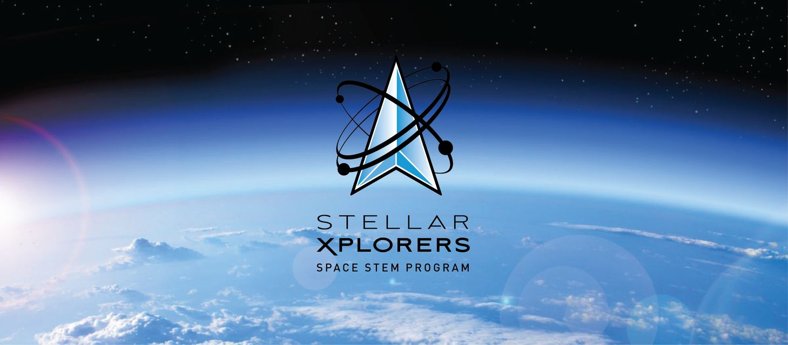
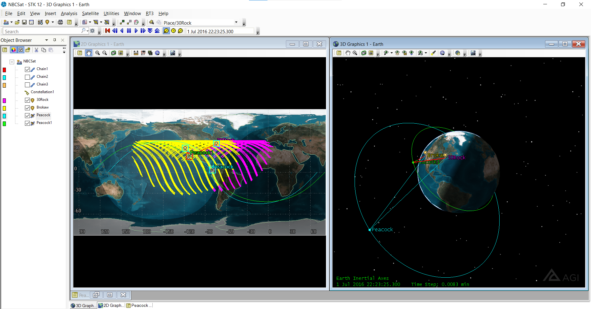

Intrests Inside of School
My intrests inside of school include, Biology, Chemistry, Data Science, Statistics. Aside from actual classes, I also take part
in the Stellarxplorers club. It has been one of the most fun things
that I have participated in while at school. It is a team competition and we are currently working to get into the semi-finals
round hoping to make it to the National finals.


This is an image of the software that we use to do Stellarsplorers, it is called STK (systems tool kit). In summary, it simulates
a time period, objects such as satellites can be added and you can see when an object has line of sight of a place on the ground.